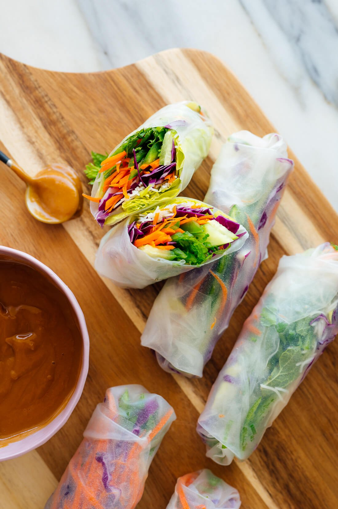

Vegan Fresh Rolls Recipe

Description:
Fresh rolls are a popular choice amongst lovers of south-east asian food. These are often prepared
and eaten one by one. Families would traditionally sit around with the ingredients on the table, and would
prepare their own fresh rolls, eating them immedietly after they are rolled. They can be filled with just about anything,
however be sure not to overstuff them or they will fall apart!
Recepie and photo borrowed from here
Ingredients
- Thin rice noodles (vermecelli)
- Lettuce
- Red or green cabbage
- Cucumbers
- Carrots
- Green onion
- cilantro
- mint
- Rice paper
- Sea salt
- Toasted sesame oil
Sauce Ingredients
- Peanut butter (cashew butter,almong butter also works)
- Rice vinegar
- Tamari or soy sauce
- Maple Syrup
- Toasted sesame oiol
- Fresh garlic
Steps
- Boil some water and cook noodles for 2-3 minutes. Drain, rinse under cool water and return to pot. Toss with sesame oil and salt.
- Fill a shallow pan with an inch of water. Fold a lint-free tea towel in half and place it next to the dish.
Combine the green onion, cilantro and mint in a small bowl, and stir.
- Place one rice paper in the water and let it rest for about 20 seconds, give or take.Carefully lay it flat on the towel.
- Leaving about 1 inch of open rice paper around the edges, cover the lower third of the paper with a few pieces of butter lettuce, followed by a small handful of rice noodles, some cabbage, and a few strips of carrot and cucumber.
Sprinkle generously with the herb mix.
-
Fold the lower edge up over the fillings, rolling upward just until the filling is compactly enclosed.
Fold over the short sides like you would to make a burrito. Lastly, roll it up. Repeat with the remaining ingredients.
- To make the peanut sauce: In a small bowl, whisk together the peanut butter, rice vinegar, tamari, maple syrup, sesame oil, and garlic.
Whisk in 2 to 3 tablespoons water, as needed to make a super creamy but dip-able sauce.
- Serve the spring rolls with peanut/nut sauce on the side. You can serve them whole or sliced in half with a sharp knife.